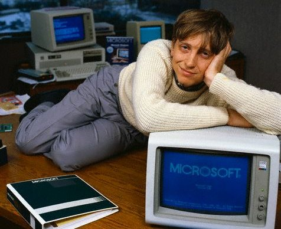
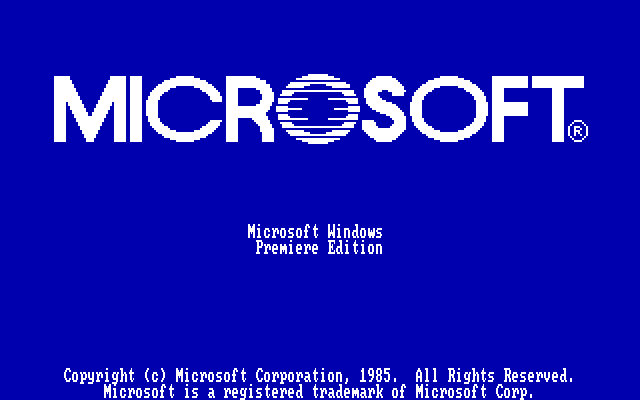
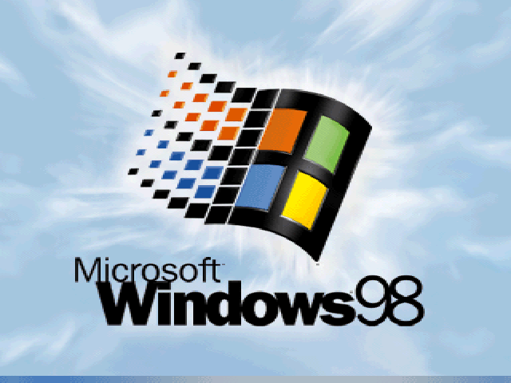

When talking about the history of computing, there is no way Bill Gates and his company
Microsoft won’t come up in the conversation. If you did'nt know, Bill Gates is a
Multi-Billion Dollar entrepreneur who has helped shape the way computers have developed over the last
40 years starting in 1975. Everybody claims they know who Bill Gates is but do they
really know how he rose to being one of the richest men in the world and how he developed the software
that over 1.2 billion people use just their word editing software daily.

Bill Gates: 1975
In 1975, a loose partnership was formed between Bill Gates and Paul Allen. These two men were computer
hobbyists and were interested in software design and development(Thompson, 2015). Following this
partnership, the two convinced the makers of the MITS Altair 8800 to adopt their software. The code
they used at this time was Beginner's All-purpose Symbolic Instruction Code
(or BASIC for short). This helped them gain a better reputation. “Gates and Allen gained better
reputation and were soon writing programs for other companies.” (Thompson, 2015)
The 1980s were huge for Microsoft as they received a deal with IBM to make the OS for their PC. This
was called DOS and later on other companies make clones and used MS-DOS. Later on in the 80s, Microsoft
released the first edition of Windows operating system. It was the first to allow inputs by a mouse as
opposed to typing instructions with the correct syntax. It also allowed you to run applications
simultaneously. This was a revolutionary idea in 1985.” These characteristics made the Windows OS widely
used in businesses and homes. As a result, Microsoft expanded faster,” (Thompson, 2015). After this,
Microsoft developed many other programs such as Word and Excel which
could be used by regular people and businesses alike.

Original Version of Windows
A series of different operating systems came out from Microsoft between 1985-1998. They are as listed
from oldest to most new; Windows 1.0x, Windows 2.x, Windows 3.0, OS2, Windows 3.1x, Windows NT 3.x,
Windows 95, Windows NT 4.0, Windows 98. Following is a table showing the OS Version and release date.
| Windows 1.0x |
November 20, 1985 |
| Windows 2.x |
December 9, 1987 |
| Windows 3.0 |
May 22, 1990 |
| OS2 |
December 1987-December 2001 |
| Windows 3.1x |
April 1992 |
| Windows NT 3.x |
July 1993 |
| Windows 95 |
August 1995 |
| Windows NT 4.0 |
July 1996 |
| Windows 98 |
June 1998 |
There wasn’t too much radical difference from generation to
generation of software, but overall, this 13 years was a vital growing time for the software to become
as superior as it is today. It went from Windows 1.0x which was an incomplete system that merely helped
you to navigate the OS with a few special applications, to Windows 98 which was almost like a modern
computer today, with desktop applications, internet access, and many more features. We might think this
looks archaic but it is fairly similar to what we are used to.

Windows 98 (came out in 1998)
In 1998, Microsoft ran into some snafus with the law. They were charged with creating a monopoly
and had to pay a settlement. This was merely a minor setback.
As the turn of the century came around, Microsoft really began diversifying their products. In
2000 they made the Windows Mobile, and in 2001 the Xbox came out. These
revolutionized both of their own fields. To this day, Microsoft still comes out with revolutionary
products such as the Surface, and continues to update their operating software to the top of the line
for the use of all clients.